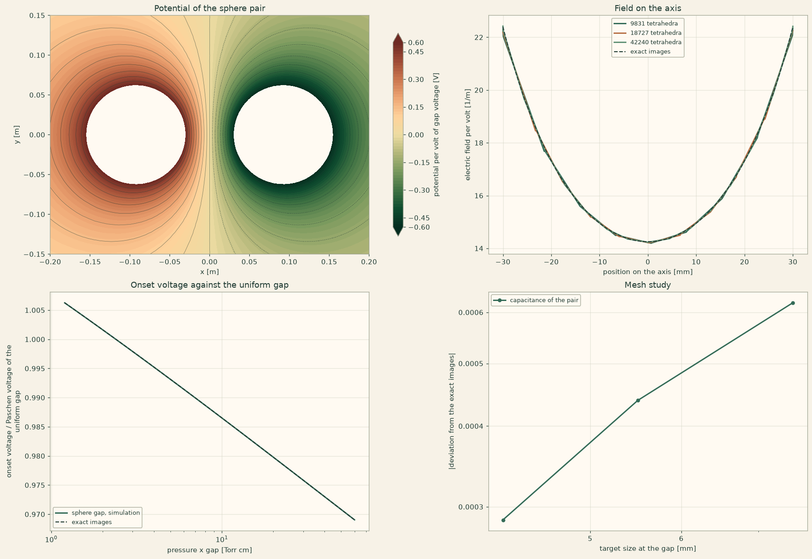
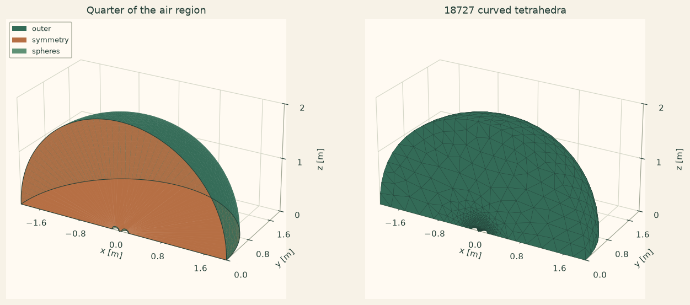

Docs › Examples › Breakdown of a sphere gap
Electrostatics · 3D
Breakdown of a sphere gap
Two conducting spheres face each other across a gap in air; the 3D electric field gives the voltage at which the gap breaks down.
Run locally with OneSimulation. The example downloads are free. Running them requires an activated runtime. OneSimulation 1.0 · CPython 3.13 on macOS (Apple Silicon), Ubuntu 22.04 (x86-64), and Windows x64. Installation and activation · View pilot plans. Scope of the reference checks.


What it computes
OneSimulation reads the air around the spheres from a STEP file and solves Laplace's equation on curved quadratic tetrahedra once; the field on the axis scales with the voltage. The first Townsend coefficient of air is integrated along the axis for all voltages and pressures from 0.2 to 10 Torr, and the onset voltage is where the integral reaches the Townsend criterion. Three meshes show the convergence. The script that builds the STEP file comes with the notebook.
What it checks
The pair capacitance agrees with the exact series of electrical images within 0.03 % on the finest mesh and the field in the middle of the gap within 0.3 %. The onset voltages agree with the images to 0.001 % at all pressures, 741 V at 1 Torr, and lie 0.6 % above to 3 % below the Paschen voltage of a uniform gap of the same width, the more the higher the pressure.
Geometry
Save the STEP file sphere_gap_streamer_onset.step next to the notebook before running it.


The geometry script
The script sphere_gap_streamer_onset_geometry.py builds the geometry with the CAD objects of OneSimulation and writes the file. Change a dimension there, run it, and run the notebook again.
"""Geometry of the OneSimulation example "Streamer onset in a sphere gap".
Builds the air around two equal conducting spheres of 62.5 mm radius (diameter 125 mm) whose surfaces are 60 mm apart
with the CAD objects of OneSimulation: a quarter of a sphere of 2 m radius, cut by the two symmetry planes through the
common axis, with the two conductors removed. The part is written to sphere_gap_streamer_onset.step with the face groups
sphere_1, sphere_2, outer, section and symmetry.
"""
from onesim.cad.d3 import Box, Sphere
radius, gap, outer_radius = 0.0625, 0.06, 2.0
centre = radius + gap / 2
quarter = Box(
length=2 * outer_radius,
width=outer_radius,
height=outer_radius,
origin=(-outer_radius, 0.0, 0.0),
)
air = Sphere(radius=outer_radius) & quarter.named("plane")
air = air - Sphere(radius=radius, origin=(-centre, 0.0, 0.0)).named("sphere_1")
air = air - Sphere(radius=radius, origin=(centre, 0.0, 0.0)).named("sphere_2")
faces = air.boundaries
air = air.grouped(
sphere_1=faces.sphere_1,
sphere_2=faces.sphere_2,
outer=faces.surface,
section=faces["plane.z_min"],
symmetry=faces["plane.y_min"] | faces["plane.z_min"],
)
air.save("sphere_gap_streamer_onset.step")The notebook
The complete notebook, cell by cell. Run it to produce the figures and the comparison printout.
Two conducting spheres of radius \(R=62.5\) mm face each other across a gap of \(s=60\) mm; the sphere at \(+V/2\) and the one at \(-V/2\). Electrons that leave the cathode gain energy in the field \(E(x)\) along the axis and ionise the gas with the first Townsend coefficient
for air. The gap breaks down when one electron starts enough avalanches at the cathode to replace itself, with the secondary emission coefficient \(\gamma\) of the cathode (Townsend criterion):
The field of the 3D problem is linear in the voltage: Laplace's equation \(\nabla\cdot(\varepsilon_0\nabla V)=0\) is solved once for \(\pm\tfrac12\) V, and \(E(x)=V\,e(x)\) follows on the axis for every voltage. Because \(\alpha\) depends so strongly on the field, the onset voltage is a very sensitive test of the field on the axis.
The air comes from the CAD file sphere_gap_streamer_onset.step: a quarter of a sphere of 2 m radius, grounded on its surface, with the two spheres removed and the part cut by the two symmetry planes through the axis. Its face groups are sphere_1, sphere_2, outer, section and symmetry. The script sphere_gap_streamer_onset_geometry.py builds it with the CAD objects of OneSimulation.
| face | condition |
|---|---|
sphere_1 | \(V=+\tfrac12\) V |
sphere_2 | \(V=-\tfrac12\) V |
outer | \(V=0\) (far away; the pair is a dipole) |
symmetry | \(\mathbf D\cdot\mathbf n=0\) |
Reference. The field of two spheres at opposite potentials is an exact series of electrical images (W. R. Smythe, Static and Dynamic Electricity, 3rd ed., McGraw-Hill 1968, chapter 5): a charge \(q_0=4\pi\varepsilon_0RV/2\) in the centre of a sphere is mirrored in the other sphere by \(q'=-qR/d\) at \(R^2/d\) from its centre, and so on. The Paschen curve of a gap with a uniform field follows from the same criterion, \(V_b=B\,ps/\big(\ln(A\,ps)-\ln\ln(1+1/\gamma)\big)\) (Y. P. Raizer, Gas Discharge Physics, Springer 1991, §8.2; the coefficients hold for \(E/p\) of 100 to 800 V cm\(^{-1}\)Torr\(^{-1}\)).
import numpy as np
from onesim.cad.d3 import Sphere
from onesim.cad.exchange import load
from onesim.materials import VacuumPermittivity
from onesim.meshing import LocalRefinement, TetrahedralMesher
from onesim.numerics import Numerics
from onesim.numerics.fem import FiniteElement, Lagrange
from onesim.numerics.linear import SparseDirect
from onesim.physics.electrostatics import (
FixedPotential,
PoissonEquation,
ZeroNormalElectricDisplacement,
)
from onesim.simulation import Problem, Simulation
from onesim.visualization import plots, theme
theme.set()Geometry and mesh
load returns the air with its named faces; the radius, the centres and the gap are read from the face records. Curved quadratic tetrahedra follow the spheres; local refinement resolves the gap. Three meshes serve the mesh study.
air = load("sphere_gap_streamer_onset.step")
faces = air.boundaries
surface = {face.id: face for face in air.faces}
radius = surface["sphere_1.surface"].radius
centre = abs(surface["sphere_1.surface"].center[0])
gap = 2 * (centre - radius)
sizes = (0.0075, 0.0055, 0.0042)
meshes = [
TetrahedralMesher(
target_size=0.3,
geometry_order=2,
max_candidate_cells=1_000_000,
refinements=(
LocalRefinement(region=faces.sphere_1, target_size=2 * size),
LocalRefinement(region=faces.sphere_2, target_size=2 * size),
LocalRefinement(region=Sphere(radius=0.045), target_size=size),
LocalRefinement(region=Sphere(radius=0.3), target_size=5 * size),
),
).generate(air)
for size in sizes
]
view = plots.Camera(elevation=25, azimuth=-60)
fig = plots.figure(1, 2, size=(14, 6))
plots.geometry(
air,
selection={
"outer": faces.outer,
"symmetry": faces.symmetry,
"spheres": faces.sphere_1 | faces.sphere_2,
},
labels=False,
camera=view,
title="Quarter of the air region",
ax=fig[0],
)
plots.mesh(
meshes[1],
groups=("all",),
legend=False,
camera=view,
title=f"{meshes[1].cell_count} curved tetrahedra",
ax=fig[1],
)
plots.show()Field of the sphere pair
One solve per mesh with the spheres at \(\pm\frac12\) V. The field on the axis is \(e(x)=-\partial V/\partial x\) per volt of applied voltage; reaction gives the charge on a sphere of the quarter model, and with the gap voltage of 1 V it is the capacitance of the pair.
model = PoissonEquation(domain=air.volume, permittivity=VacuumPermittivity())
numerics = Numerics(
spatial=FiniteElement(element=Lagrange(order=2), quadrature_order=5),
linear_solver=SparseDirect(),
)
problem = Problem(
name="Sphere gap",
geometry=air,
physics=(model,),
boundary_conditions=(
FixedPotential(boundary=faces.sphere_1, physics=model, value=0.5),
FixedPotential(boundary=faces.sphere_2, physics=model, value=-0.5),
FixedPotential(boundary=faces.outer, physics=model, value=0.0),
ZeroNormalElectricDisplacement(boundary=faces.symmetry, physics=model),
),
)
potentials = [
Simulation(problem=problem, mesh=mesh, numerics=numerics)
.solve_stationary()
.field(model.potential)
for mesh in meshes
]
capacitance = np.array(
[4.0 * potential.reaction(faces.sphere_1) for potential in potentials]
)
x = np.linspace(-gap / 2, gap / 2, 801)
axis = np.column_stack((x, 0 * x, 0 * x))
simulated = [np.abs(potential.gradient(axis)[:, 0]) for potential in potentials]Exact field and Townsend integral
images returns the charges and positions of the image series; the exact field on the axis is their Coulomb field. The ionisation integral is evaluated for all voltages and pressures at once, the onset voltage is where it reaches \(\ln(1+1/\gamma)\), found by interpolation in the voltage.
eps0 = float(VacuumPermittivity().evaluate())
def images(volts=0.5, terms=120):
"""Charges and positions of the images of two spheres at the potentials +volts and -volts."""
found = [
(4 * np.pi * eps0 * radius * volts, -centre),
(-4 * np.pi * eps0 * radius * volts, centre),
]
new = list(found)
for _ in range(terms):
new = [
(
-q * radius / abs(p - other),
other + np.sign(p - other) * radius**2 / abs(p - other),
)
for q, p in new
for other in (-np.sign(p) * centre,)
]
found += new
return np.array(found).T
q, p = images()
exact = np.abs(
np.sum(
q * (x[:, None] - p) / (4 * np.pi * eps0 * np.abs(x[:, None] - p) ** 3), axis=1
)
)
torr = 133.322
A, B, gamma = 15 / (1e-2 * torr), 365 / (1e-2 * torr), 0.01
criterion = np.log(1 + 1 / gamma)
pressures = np.geomspace(0.2, 10.0, 25) * torr
volts = np.linspace(100.0, 5000.0, 2451)
onset = lambda e: np.array(
[
np.interp(
criterion,
np.trapezoid(A * p_ * np.exp(-B * p_ / (volts[:, None] * e)), x, axis=1),
volts,
)
for p_ in pressures
]
)
onsets = [onset(field) for field in simulated]
sphere_gap, exact_gap = onsets[-1], onset(exact)
paschen = B * pressures * gap / (np.log(A * pressures * gap) - np.log(criterion))
mean_field = 1 / gapResults
The capacitance of the pair and the field in the middle of the gap on the three meshes against the exact images, the utilisation factor \(\eta=E_\mathrm{mean}/E_\mathrm{max}\) of the gap, the onset voltage at 1 Torr, and the onset voltage over the pressure against the Paschen voltage of a gap with a uniform field.
index = np.argmin(np.abs(pressures - torr))
print(
f"sphere radius {1e3 * radius:.1f} mm, gap {1e3 * gap:.1f} mm, gap / radius {gap / radius:.3f}"
)
exact_capacitance = q[p < 0].sum()
print(
"tetrahedra capacitance [pF] deviation mid-gap field [1/m] deviation onset at 1 Torr [V]"
)
for mesh, c, field, voltage in zip(meshes, capacitance, simulated, onsets):
print(
f"{mesh.cell_count:10d} {1e12 * c:18.5f} {100 * (c / exact_capacitance - 1):+10.4f} % {field[400]:20.4f} {100 * (field[400] / exact[400] - 1):+10.3f} % {voltage[index]:20.2f}"
)
print(
f"exact images {1e12 * exact_capacitance:16.5f} {'':12s} {exact[400]:20.4f} {'':12s} {exact_gap[index]:20.2f}"
)
print(
f"exact field on the axis: mid-gap {exact[400]:.3f} 1/m, at the sphere {exact.max():.3f} 1/m, utilisation factor "
f"E_mean/E_max = {mean_field / exact.max():.4f}"
)
print(
"pressure [Torr] p*gap [Torr cm] sphere gap [V] exact images [V] deviation uniform gap, Paschen [V] ratio"
)
for k in range(0, len(pressures), 3):
print(
f"{pressures[k] / torr:15.2f} {pressures[k] / torr * 100 * gap:16.2f} {sphere_gap[k]:15.1f} {exact_gap[k]:17.1f} "
f"{100 * (sphere_gap[k] / exact_gap[k] - 1):+10.3f} % {paschen[k]:25.1f} {sphere_gap[k] / paschen[k]:7.3f}"
)
print(
f"largest deviation of the onset voltage from the exact images over all pressures: {100 * np.abs(sphere_gap / exact_gap - 1).max():.3f} %"
)Figure
The potential in the plane through both centres, the field on the axis against the exact field, the onset voltage against the pressure with the Paschen curve of a uniform gap, and the mesh study.
fig = plots.figure(layout=[["potential", "axis"], ["paschen", "study"]], size=(16, 11))
plots.surface(
potentials[-1],
boundary=faces.section,
symmetry={"planes": [((0, 1, 0), (0, 0, 0))]},
limits=(-0.5, 0.5),
contours=21,
subdivisions=3,
label="potential per volt of gap voltage [V]",
title="Potential of the sphere pair",
xlimits=(-0.2, 0.2),
ylimits=(-0.15, 0.15),
ax=fig["potential"],
)
plots.line(
1e3 * x,
{f"{mesh.cell_count} tetrahedra": field for mesh, field in zip(meshes, simulated)},
reference={"exact images": (1e3 * x, exact)},
xlabel="position on the axis [mm]",
ylabel="electric field per volt [1/m]",
title="Field on the axis",
legend="upper center",
ax=fig["axis"],
)
plots.line(
pressures / torr * 100 * gap,
{"sphere gap, simulation": sphere_gap / paschen},
reference={"exact images": (pressures / torr * 100 * gap, exact_gap / paschen)},
scale="logx",
xlabel="pressure x gap [Torr cm]",
ylabel="onset voltage / Paschen voltage of the uniform gap",
title="Onset voltage against the uniform gap",
legend="lower left",
ax=fig["paschen"],
)
plots.line(
np.array(sizes) * 1e3,
{"capacitance of the pair": np.abs(capacitance / exact_capacitance - 1)},
markers=True,
scale="loglog",
xlabel="target size at the gap [mm]",
ylabel="|deviation from the exact images|",
title="Mesh study",
ax=fig["study"],
)
plots.show()Going further
Move the spheres closer or pull them apart (gap in sphere_gap_streamer_onset_geometry.py, then write the STEP file again): the utilisation factor \(\eta\) falls towards the sharp-field regime and the sphere gap departs from the Paschen curve of the uniform gap. With a second solve in which one sphere is grounded and the other held at the full voltage, the same integral gives the onset voltage of the common one-sided sphere-gap arrangement. The effective coefficient of air at atmospheric pressure, with attachment, takes the place of the Townsend law for streamers at 1 atm.